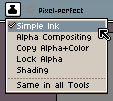
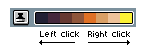

A pixel rajz kézművessége
vonal, fény és forma
Az eszközöket már ismered — most a készség jön. Négy technika emel egy lapos kis rajzot kész pixel arttá: tiszta vonal (line art), kézi anti-aliasing, árnyékolás (shading + color ramp) és körvonalazás (outline). Mindegyikhez van interaktív demó — tekergesd, és nézd, mi történik.
Lapos → árnyékolt → hue-shiftelt → kész (körvonal + csúcsfény). Pontosan ezt tanuljuk meg.
A pixel rajz kézművessége
Az alapok-leckében megtanultuk az eszközöket. De a pixel art nem az eszközökről szól — hanem arról, hogyan rakod le a kevés pixelt úgy, hogy a forma tiszta és olvasható legyen. Négy alapkészség van, és ez a lecke mind a négyet végigveszi:
| Készség | Mit old meg | Fejezet |
|---|---|---|
| Line art | Tiszta, egyenletes vonal — nincsenek csúnya „lépcsők” (jaggies). | 2. |
| Anti-aliasing | A lépcsők lágyítása köztes árnyalatokkal — kézzel. | 3. |
| Árnyékolás | Térfogat és fény: color ramp, fényforrás, hue-shift. | 4–5. |
| Körvonalazás | A sziluett kiemelése: külső/belső, fekete vs. selout. | 6. |
1. A Pencil mindig éles. A ceruza sosem simít — minden pixel kemény szélű. Ez pixel arthoz szándékos: te döntesz minden képpontról. Ezért az anti-aliasingot is kézzel csináljuk (3. fejezet).
2. Az ink (festék) módok. A Context Bar ink-legördülőjében válthatsz festékmódot. A legtöbbször a Simple Ink kell, de van egy különleges, pixel-art-ra szabott mód: a Shading — ezt a 4. fejezetben használjuk árnyékolásra.

Simple Ink, Alpha Compositing, Copy Alpha+Color, Lock Alpha, Shading. A Same in all Tools beállítja, hogy minden eszköz ugyanazt használja-e.Line art & a lépcsők
Pixelekből nem lehet tökéletes átlót rajzolni — a ferde vonal mindig lépcsőkből áll. A profi line art titka nem a lépcsők eltüntetése, hanem hogy egyenletesek legyenek: azonos hosszúságú szakaszok, ugyanabban a ritmusban. Az egyenetlen lépcső (hol 1, hol 4 pixel) és a dupla pixel (a sarkon kilógó képpont) az, ami „amatőrnek” láttatja a vonalat — ezeket hívják jaggies-nek.
JÓ — azonos hosszú szakaszok: ██ ██ ██ ██ (mind 2 hosszú, lépcsőzve) ROSSZ — kapkodó, egyenetlen: █ ████ █ ██ (1,4,1,2… + kilógó pixel)
A Pencil aktív állapotában a Context Bar Pixel-perfect kapcsolója automatikusan kidobja a szabadkézi vonal „dupla sarok” pixeleit — a vonal egy képpont vékony marad, lépcsők nélküli könyökökkel. Nagy segítség, de a szakaszok ritmusát neked kell jól adagolnod.
Ugyanaz a ferde vonal kétféleképp. Bal: minden szakasz 3 pixel, szabályos ritmus. Jobb: kapkodó szakaszhosszak + két kilógó „dupla” pixel.
A bekapcsolt jelölés a jobb oldali vonal problémás pixeleit kereteli: a dupla sarkokat és az ugráló szakaszhosszt. A bal oldali vonalon nincs mit jelölni — az a cél.
Kézi anti-aliasing
Az anti-aliasing (AA) a lépcsős élek lágyítása köztes árnyalatokkal: a vonal színe és a háttér közötti félárnyékot teszünk a lépcső „belső sarkába”, így távolról a szem simább élt lát. Mivel a Pencil nem simít, ezt kézzel rakod le — innen a „selective” (válogatós) AA elnevezés.
- 1-színű AA: egyetlen köztes árnyalat a sarkokban — tiszta, takarékos. A leggyakoribb.
- 2-színű AA: két átmeneti szint a hosszabb lépcsőkön — simább, de könnyen „elmosódottá” válik.
Egy ferde ív széle. Kapcsold be az AA-t: a lépcsők sarkába köztes árnyalat kerül. Figyeld a kis (valós méretű) képet — onnan tűnik simábbnak.
A „nyers” él csak alapszín + üres — kemény lépcsők. Az 1-színű AA egy félárnyalatot tesz a sarkokba; a 2-színű kettőt. Nézd, ahogy a 2-színű már-már „homályos” — ezért bánj vele óvatosan.
Árnyékolás (shading)
Az árnyékolás adja a térfogatot: a lapos folt gömbbé, a vonalakból tárgy lesz. Három döntés kell hozzá:
- Fényforrás iránya. Dönts el egy irányt (pl. bal-fent), és tartsd az egész képen. A fény felőli oldal világos, a túloldal sötét.
- Color ramp. Néhány árnyalatból álló sor, sötéttől világosig (erről az 5. fejezet). Ezekkel „lépdelsz” a felületen.
- Kerüld a pillow shadingot. Ha minden élről befelé sötétítesz (a fényforrás iránya nélkül), „párnás”, lapos lesz a forma. A fénynek iránya van!
A Shading ink mód
Itt jön az Aseprite egyik gyöngyszeme. A Shading ink módban kijelölsz egy shade-et a Color Bar-ban (egy sötét→világos színsort), és festéskor a bal klikk sötétebbre, a jobb klikk világosabbra lépteti a pixelt a rampen belül. Nem színt választasz — hanem „irányt”: sötétítesz vagy világosítasz, mindig a paletta-rampedet követve.

Egy golyó, a kijelölt ramppel árnyékolva. Forgasd a fényt, állítsd a lépcsők számát, és váltsd át „pillow” módra, hogy lásd a hibát.
Az irányított módban a fény egy irányból jön — a golyó térbeli lesz. A pillow minden szélről befelé sötétít: lapos, „párnás”. Kevesebb lépcső = retróbb, több = lágyabb.
Color ramp & hue-shift
A color ramp az árnyalat-sorod: néhány szín a sötéttől a világosig. A kezdő hibája, hogy a rampet úgy csinálja, hogy csak a világosságot (lightness) változtatja — ettől szürkés, élettelen lesz. A profi trükk a hue-shift: az árnyékot a hidegebb (kék/lila), a fényt a melegebb (sárga/narancs) szín felé tolja. Ráadásul a telítettséget is hangolja. Így a ramp „él”.
árnyék ◀────────── alapszín ──────────▶ csúcsfény hidegebb melegebb (hue → kék/lila) + (hue → sárga) sötétebb, telítettebb világosabb, kicsit fakóbb
Ugyanaz a golyó, ugyanannyi lépcsővel — bal oldalt hue-shift nélkül (csak világosság), jobb oldalt hue-shifttel.
Told a csúszkát: a jobb oldali ramp árnyékai a hideg, csúcsfényei a meleg felé csúsznak — a golyó azonnal „életre kel”. A bal oldali ugyanazzal a világossággal fakó marad.
Körvonalazás (outline)
A körvonal a sprite sziluettjét emeli ki, hogy elváljon a háttértől. Két fő döntés van: hol (külső vagy belső) és milyen színnel (fekete vagy „selout”).
| Típus | Mit csinál | Mikor |
|---|---|---|
| Külső (outer) | A sziluetten kívül fut körbe — a sprite „kicsit nagyobb” lesz. | Ikonok, UI-elemek, erős elválasztás. |
| Belső (inner) | A forma peremén belül — a méret marad, lágyabb hatás. | Karakterek, ahol fontos a pontos méret. |
| Fekete | Kemény, „rajzfilmes” kontúr. Erős, de néha túl nehéz. | Élénk, kontrasztos stílushoz. |
| Selout (színes) | A körvonal a szomszéd szín sötétebb/telítettebb változata, nem fekete. | Lágyabb, „festői” stílus; természetesebb. |
A selout azt jelenti, hogy a körvonal színe követi az alatta lévő színt: egy zöld rész mellett sötétzöld, egy piros mellett sötétvörös a kontúr. Sőt, ahol erős a fény, ott a körvonal akár ki is hagyható. Ettől a sprite nem „kivágott matrica”, hanem szervesebb. Próbáld ki lent, és váltogasd a hátteret — látni fogod, miért nem mindig a fekete a jó.
Egy árnyékolt golyó, különböző körvonalakkal. Váltsd a hátteret, hogy lásd, melyik körvonal hol olvasható jól.
Tedd sötét háttérre a fekete körvonalat — szinte eltűnik. A selout minden háttéren megtartja a formát, mert a saját színeihez igazodik.
Összefoglaló & merre tovább?
A négy technika együtt csinál egy lapos foltból kész sprite-ot:
- Line art — konzisztens lépcsők, nincs dupla pixel; segít a Pixel-perfect.
- Anti-aliasing — kézi köztes árnyalatok, mértékkel, főleg belső éleken.
- Árnyékolás — egy fényforrás-irány, color ramp, a Shading ink; kerüld a pillow shadingot.
- Color ramp — hue-shift: hideg árnyék, meleg fény, nem csak világosság.
- Körvonal — sziluett kiemelése; fekete vagy selout, külső vagy belső.
- Dithering kézzel — átmenetek kevés színnel, amikor két ramp-lépcső közt „pötyögsz”. Szépen folytatja az árnyékolást — vö. a PixelOver dithering leckével (ott shader csinálja, itt te).
- Animáció mélyebben — járásciklus, tag-ek, időzítés (a alapokban már belekóstoltunk).
- Tilemap editor — csempe-alapú pályarajzolás.